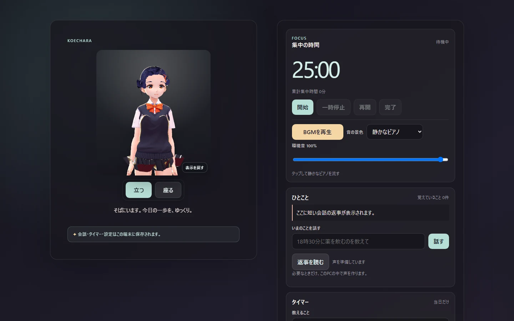
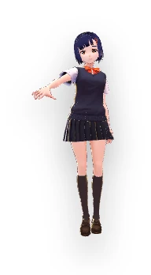
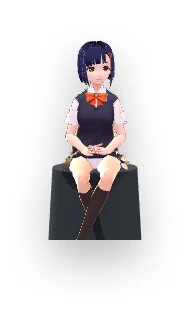
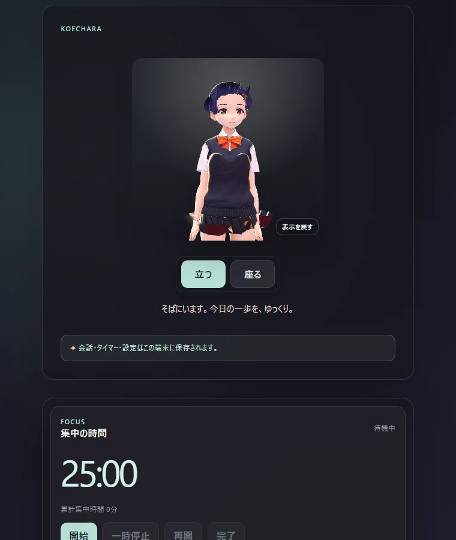

01
姿がある
標準キャラクターを同梱。起動したその日から、3Dキャラクターのいる画面を使い始められます。
Koecharaは、声と姿を持った3Dキャラクターが、PCの中で静かに過ごすデスクトップコンパニオンです。話したいときに少し話す。集中したいときに時間を預ける。それ以外は、ただそこにいます。
通常価格 1,480円（税込）
STORESで販売中

Koecharaの中心にあるのは、機能の多さではありません。3Dのキャラクターが動き、こちらを向き、必要なら声で返す。その存在を邪魔にならない大きさでPCの中に置くことです。
会話、集中タイマー、当日だけのリマインド、朗読、BGM。日常に少しだけ役立つものを、キャラクターのそばにまとめています。
画面の中心は3Dキャラクターです。Panel modeでは横方向へ回転し、縦方向へ視点を動かせます。Desktop modeではビュー操作を止め、キャラクターとしてデスクトップに置きます。
標準キャラクターを同梱。起動したその日から、3Dキャラクターのいる画面を使い始められます。
横へ回す、上から見る、下から見る、近づく。固定された立ち絵ではなく、3D空間のキャラクターとして触れられます。
標準キャラクターの発話は、同じPC内で動くローカル音声処理を使います。通常の会話をクラウド音声サービスへ送る前提にはしていません。
Desktop modeでは、操作パネルを閉じてキャラクターだけをWindowsデスクトップに置けます。キャラクターは現在のモニターの下端に沿って静かに過ごし、ときどき短く歩きます。
短い歩行では、キャラクターのアニメーションだけでなくKoecharaのウィンドウ自体が横へ移動します。現在のモニターから勝手に別のモニターへは移りません。
Desktop modeでのドラッグは横方向だけ。縦位置はデスクトップの床に固定され、キャラクターが空中へずれていかないようにしています。
右クリックメニューから「立つ」「座る」を切り替えられます。座っている間は歩行などの自律移動を行いません。
設定や細かな操作をしたいときはPanel modeへ戻せます。Panelでは回転、上下視点、ズームなど従来の3Dビュー操作を使えます。
自律的な動きは静かな頻度に抑え、Focus中・発話中・メニュー操作中などは移動を止めます。


キャラクターが常に割り込んでくる設計ではありません。話す、時間を計る、読んでもらう。使うときだけ前に出ます。
長いチャット履歴を眺めるのではなく、今ここで短く話すための場所。返答は画面に出し、必要なら標準キャラクターの声で読ませられます。
キャラクターから時々話してほしいときだけ、自律発話をONにできます。自律発話は起動時にOFFへ戻る仕様です。「招待を受け取る」は別の機能として分けています。
シンプルな集中・休憩タイマーとBGMを同じ場所に。終了時には標準キャラクターがローカル音声で知らせます。
「20分後に休憩」「18時30分に薬を飲む」など、今日の中で使う小さなリマインドを端末に保存。繰り返し予定やカレンダー管理には広げていません。
短いシナリオを入れて、区切りながら朗読。Pause / Resume / Stopを持ち、BGMや環境音と一緒に使えます。
静かなBGMや環境音を、その場の空気として再生。集中タイマーと一緒にも、何もしない時間にも使えます。
会話、記憶、当日タイマー、セリフ帳、ユーザーが読み込んだキャラクター素材。Koecharaの個人的なデータは、販売候補版では基本的にそのPCの中に置きます。
標準キャラクターをそのまま使うことも、手元のVRMを読み込んで置き換えることもできます。idle motionはVRMAをひとつ読み込み、標準motionとは別に差し替え可能です。
読み込んだVRM / VRMAはローカルの user assets として保存され、リロード後も復元されます。標準キャラクターと標準idleへ個別に戻すこともできます。
販売ページ用の架空モックではなく、現行Windows 1.0 Sale Candidateを実際に起動して撮った画面です。

1.0の販売対象はWindows x64です。CPU、RAM、対応OSバージョンなどの詳細な動作環境は今後このページで追記します。
Koechara 1.0はWindows x64向けです。発売記念価格1,280円（税込）で、Studio NaoJunのSTORESから購入できます。
購入・決済はStudio NaoJunのSTORESを利用します。決済完了後、Windows x64版のダウンロード商品として提供します。
チャットだけを主役にしたサービスではありません。3Dキャラクターがいる画面を中心に、短い会話、タイマー、朗読、BGMなどをまとめたデスクトップコンパニオンです。
現行Sale Candidateでは、会話、記憶、当日タイマー、ユーザー素材などの個人データを端末内に置くLocal-first設計です。クラウド会話メモリへの自動同期を前提にしていません。
自律発話はユーザーがONにしたときだけ動き、アプリ起動時にはOFFへ戻ります。「招待を受け取る」は自律発話とは別に扱われます。
はい。現行Sale CandidateではローカルのVRMをひとつ読み込んで標準キャラクターを置き換え、VRMAをひとつidle motionとして読み込めます。
通常価格は1,480円（税込）、発売記念価格は1,280円（税込）です。現在、Studio NaoJunのSTORESで購入できます。
商品説明はnaojun.jpで行い、実際の購入・決済はStudio NaoJunのSTORESを利用します。このページの購入ボタンから商品ページへ進めます。
Koechara 1.0の販売対象はWindows x64です。このページをスマートフォンで閲覧することはできますが、iPhone版アプリを販売しているという意味ではありません。macOS版も1.0の販売対象には含めていません。
Windows x64向けKoechara 1.0をStudio NaoJunのSTORESで販売しています。現在の販売パッケージは1.0.0-rc.4です。
通常価格1,480円（税込）／発売記念価格1,280円（税込）。購入・決済・ダウンロード提供はSTORESを利用します。